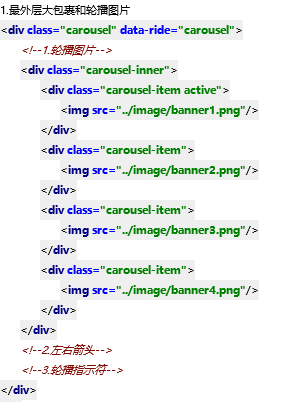
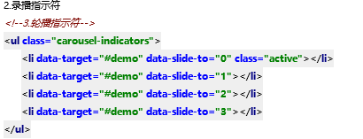
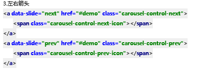

轮播图
1.最外层大包裹和轮播图片

结构
div.carousel 相对定位
>div.carousel-inner w100 溢出隐藏
>div.carousel-item display：none
>img
事件：给最外层div div.carousel添加自定义属性data-ride="carousel"
然后给某一个 div.carousel-item添加类 .active
这样轮播图片就开始运动了
2.录播指示符

结构
ul.carousel-indicators>li
对ul的样式，定位，弹性
.carousel-indicators对后代li的样式
li的宽高，li背景，li的位置
我们可以按照自己的需求，重写这部分样式
.carousel-indicators li{
width:15px;height:15px;
background-color:#fff;
margin-left:6px;
margin-right:6px;
border-radius: 50%;
}
此外，.carousel-indicators .active 让当前激活的li变成白色
我们要重写此样式
.carousel-indicators .active{
background-color:#0aa1ed;
}
3.左右箭头

结构
两个a标签
a.carousel-control-prev/next
这个样式设置了a的宽度，背景色，位置
我们需要重写此样式
.carousel-control-prev,
.carousel-control-next{
width:4%;height:20%;
background-color:#aaa;
top:40%;
border-radius:0.25rem;
}
自定义属性
data-silde="next/prev" 注意要写href="#demo"
轮播图